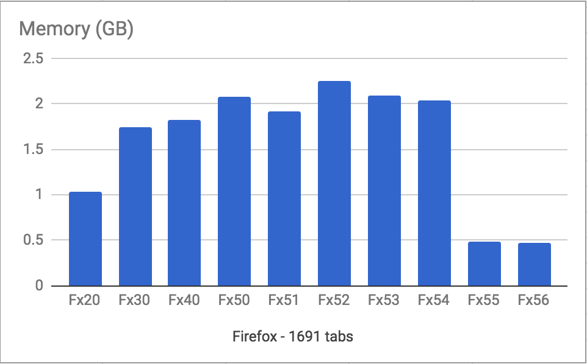

I've got a Firefox profile with 1691 tabs.
I started trying to write down why, but gave up for now. It was becoming an overly long exploration of product design and the future of the web.
It's Friday. Let's keep things simple.
As you would expect, Firefox handled this profile quite poorly for a long time. I got used to multi-minute startup time, waiting 15-30 seconds for tabs from external apps to show up, and all manner of non-responsive behavio(u)r.
And then, quite recently, everything changed.
Quantum Flow
Right now, more effort is being put into making Firefox fast than I've seen since... well, since I've been working on Firefox. And I've been at Mozilla for more than a decade.
Part of this effort is a project called Quantum Flow - a bunch of engineers making changes that directly impact Firefox responsiveness. To learn more and follow along with these efforts, read Ehsan Akhgari's weekly posts.
A lot of the improvement in this particular scenario is from Kevin Jones' work on bringing the overall cost of unloaded tabs as close to zero as possible. While the major work has landed, the work continues in Bug 906076. Huge amounts of thanks for the recent wins for us pathological tab hoarders go to Kevin, Dão Gottwald, Mike de Boer, Tim Taubert, David Teller, Mike Conley, and Gijs Kruitbosch.
Test Scenario
I took my 1691 tab browser profile, and did a wall-clock measurement of start-up time and memory use for Firefox versions 20, 30, 40, and 50 through 56.
These are my personal results. You might not get the same results. If you test 1691 (or even 1692) tabs and find something totally different, I'd love to hear about it.
Notes:
I shut down most things on my Macbook (yeah the little one that's more like a glorified iPad).
I turned off wifi. This is a measurement of Firefox, not the network, nor web page rendering.
I measured by eyeball, using "time cat" on the command line. This might seem weird, but c'mon - I'm measuring minutes. Microsecond precision is not required.
I measured startup time five times, dropping highs and lows. Even that wasn't really necessary - the times were startingly consistent. With almost 1700 tabs and >5 minute startup, the standard deviation was negligible.
For measuring startup time, I killed the timer when the "server not found" page finished being rendered in the active tab. After lots of testing, I consistently found this to be the point at which the application as a whole became responsive and usable.
For memory, I waited for one minute after the startup measurement point and then grabbed the total value from the bottom of about:memory. I waited one minute, because I observed a consistent spike in memory after startup which went away within the first minute and then stabilized for a long period after. It's all kinds of initialization that doesn't need to block the app from starting, but needs to happen once you get to browsing.
I tested Firefox versions 20, 30, 40, and 50 through 56. I tried testing Firefox 10 but it permahung while loading the profile.
Start-up Time
Graph of startup time with 1691 tabs across Firefox versions 20, 30, 40 and 50 - 56:

It's interesting that Firefox startup time got consistently worse over time until Firefox 51. It'd be interesting to do this test with varying numbers of tabs and find out at what point these types of regressions become noticeable.
Memory Usage
Graph of memory use one minute after startup with 1691 tabs across Firefox versions 20, 30, 40 and 50 - 56:

The efforts that the Firefox and Gecko and Servo teams are putting into making a SUPERFUCKINGFAST browser are having a real impact, and that's exciting to see.